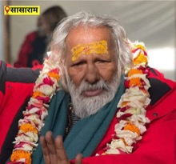
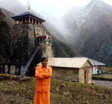

Коли життя знову приводить до схожих ситуацій,
а внутрішній запит вимагає глибокого рішення.
Вогонь, мантри та санкальпа поєднують
ваш намір із простором священної дії.
Особиста або дистанційна участь.
Підбір відбувається через чат-бот.
Ягья — один из древнейших огненных практик ведической традиции.
Её истоки восходят к ведической эпохе: ранние формы огненного священнодействия описаны в Ведах, древнейший слой которых, в письменной форме, относят к 1500–1200 гг. до н. э.
В центре Ягьи — священный огонь, Агни.
Агни почитается как сила, через которую молитва, намерение и подношение обращают человека к высшему порядку.
Во время практики звучат мантры и совершаются подношения: гхи, хаван-самагри, зерно, травы и другие практические вещества.
Так личное намерение — санкальпа — становится частью священного действия.
На протяжении тысячелетий Ягья совершается как серьёзное священнодействие, требующее подготовки, чистого намерения и участия знающих исполнителей.
К этой практике приходят тогда, когда внутренний запрос созрел и требует более глубокого уровня обращения.
Ягьи проводятся для благословения, очищения, защиты, процветания, поддержки в важных переходах и восстановления гармонии.
Ягья — это священное действие,
в котором внутренний запрос соединяется
с огнём, молитвой и намерением.
Ягья — духовная практика, которая действует через огонь, мантры, внимание и намерение.
Она помогает человеку выстроить внутреннюю опору, яснее увидеть ситуацию и почувствовать направление следующего шага.
Практика проводится в ведической традиции и направлен на очищение, благословение, защиту, поддержку и гармонизацию.
Здесь важны чистое намерение, уважение к священному действию и готовность человека быть участником процесса.
Ягья — это встреча человека,
огня и намерения в пространстве традиции.
Ваш запрос остаётся конфиденциальным.
ИМЕЕТ ОСОБУЮ СИЛУ В НАШЕ ВРЕМЯ
В ведической традиции говорится о циклах времени — югах, в которых меняются условия жизни и способы духовного действия.
Современный период описывается как Кали-юга — время усложнённых процессов, внутреннего напряжения и повторяющихся жизненных ситуаций.
В такие периоды особую силу приобретают практики, связанные с огнём, мантрами и намерением.
Ягья становится одной из ключевых форм обращения, через которую человек может направить свой запрос в священное пространство действия.
Именно в это время Ягья становится способом
внести ясность, силу и направление в свою жизнь.
К Ягье приходят, когда внутренний вопрос становится сильнее привычных ответов.
Когда жизнь снова приводит к похожим ситуациям.
Когда усилия есть, а результат возвращает в тот же круг.
Когда внутри накапливается усталость и напряжение.
Когда впереди важный выбор или переход.
Когда требуется ясность, опора и внутреннее выравнивание.
Когда есть запрос, который требует обращения глубже, чем уровень размышлений.
Ягья может поддержать вас, если:
повторяются ситуации в отношениях, семье, деньгах или работе;
впереди новый этап, требующий поддержки;
есть ощущение внутреннего тупика;
есть потребность в очищении, защите и благословении;
решения принимаются, а состояние остаётся прежним;
внутренний запрос созрел и требует действия.
Ягья помогает войти в состояние,
из которого решение становится яснее,
а следующий шаг — точнее.
Когда внутреннее состояние
требует возвращения к себе.
Иногда это проявляется так:
Мы проводим Ягьи, посвящённые женскому состоянию, внутренней силе и восстановлению связи с собой.
Бывают периоды, когда роли, ответственность, отношения и внешние задачи постепенно забирают ясность, мягкость и опору. Вместе с этим уходит ощущение собственной привлекательности, ценности и живого внутреннего сияния.
Женщина начинает смотреть на себя глазами боли: «я уже не та», «меня не выберут», «я не нужна», «я не интересна мужчине». Так рождаются иллюзии, которые разрушают изнутри и отдаляют от собственной природы.
Но это не правда о женщине. Это состояние, которое требует очищения, восстановления и возвращения к внутренней ценности.
Ягья становится пространством, где женщина снова соединяется с собой: со своей красотой, силой, достоинством и внутренним центром.
Ягья может поддержать вас, если:
накапливается усталость и внутреннее напряжение
появляется ощущение потери себя
отношения требуют гармонизации
требуется восстановление после сложного периода
есть потребность в защите и внутренней опоре
возникает желание вернуться к своему естественному состоянию
Ягья становится пространством очищения, защиты и восстановления, где женщина возвращается к своей естественной красоте, внутренней ценности, силе и сиянию.
Ягья помогает вернуться к жизни из другого состояния — яснее, тише, собраннее и глубже.
ПОДОБРАТЬ ЯГЬЮРождение ребёнка — это путь, который начинается раньше первого вдоха.
Сначала в сердце родителей появляется зов. Потом созревает намерение. Затем женщина становится пространством, через которое новая душа входит в мир.
Ведическая традиция бережно относится к каждому этапу этого пути: подготовке к зачатию, беременности, родам, рождению, имени и первому году жизни ребёнка.
Ягья помогает пройти этот путь в поле молитвы, света, благодарности и внутреннего спокойствия.
Для каждого этапа собраны подходящие Ягьи: для благословения зачатия, поддержки матери, защиты материнского поля, мягкого перехода в родах, благодарности за рождение, имени ребёнка и первых шагов новой души в мире.
Это не обещание чуда. Это священный способ войти в важный жизненный переход с большей чистотой, любовью и опорой.
Пусть ребёнок приходит в мир через любовь.
Пусть мать чувствует поддержку.
Пусть семья встречает новую душу
с благодарностью и светом.
КАК ПРОХОДИТ
Каждый этап Ягьи связан с вашим намерением
и проходит в соответствии с ведической традицией.
Вы выбираете практика по своему запросу или через подбор.
Формируется намерение, с которым проводится Ягья.
Используются гхи, хаван-самагри, зерно, травы и практические вещества, соответствующие выбранной Ягье.
Во время практики звучат мантры, совершаются подношения в огонь и выполняются действия согласно традиции.
Вы можете участвовать лично или на расстоянии, удерживая своё намерение в момент проведения.
В зависимости от формата вы получаете фото- или видео-подтверждение после проведения Ягьи.
Ягья — это последовательный процесс,
в котором каждый этап
имеет значение.
Ягья проводится в разных форматах —
в зависимости от вашего запроса, глубины участия
и степени личного внимания.
Общий практика, в который можно войти со своим личным намерением.
Подходит для первого участия и для регулярной практики на постоянной основе.
Персональная практика, которая проводится в соответствии с вашим запросом и сформированной санкальпой.
Формат, в котором внимание полностью направлено на вашу ситуацию, ваше состояние и ваше намерение.
Подходит, когда важна точность, глубина и личное сопровождение в процессе практики.
Персональная практика с более точной настройкой через ваш запрос, санкальпу и астрологические данные.
Формат для тех, кому важно пройти Ягью осознанно, с пониманием своего периода, намерения и направления практики.
Расширенный индивидуальный формат, состоящий из серии священных действий.
Практики проводятся на центральной большой кунде.
С глубоким вниманием к вашему запросу, санкальпе и астрологическим данным.
Подходит для значимых жизненных периодов, важных переходов и запросов, которые требуют особого уровня подготовки.
Вы можете участвовать лично
или на расстоянии.
Если формат пока не очевиден, подбор поможет определить подходящий вариант.
Каждая Ягья связана с определённой сферой жизни
и направлением внутренней работы.
Для освобождения от тяжёлых состояний и выравнивания внутреннего пространства.
Для поддержки в делах, работе и материальном потоке.
Для гармонизации связей, любви и семейного пространства.
Для поддержки жизненной силы и внутреннего ресурса.
Для работы с родовыми сценариями и внутренними узлами.
Для ситуаций, где путь требует дополнительной поддержки.
Для практики, ясности и внутреннего роста.
Если направление пока не очевидно,
подбор поможет определить нужную Ягью.
Начать можно с участия
в групповой Ягье.
Это мягкий формат, в котором вы входите в практику через общее направление практики.
Во время Ягьи вы знаете время её проведения и удерживаете своё намерение в течение всего процесса.
Это простой и естественный способ первого участия.
Для групповых Ягий существует расписание. Вы можете выбрать ближайшую дату и присоединиться.
ПРОСТРАНСТВО
Живая линия благословений, традиции и духовной ответственности.
Место, где сегодня проходят Ягьи, освящено благословениями
мастеров индийской и мировой духовной традиции.

Свами Сомнатх Гири Джи Махарадж
Дал благословение, которое стало основой для создания нашего ашрама. Во время своего пребывания он посадил здесь деревья — как живой знак благословения и связи с этим местом.
Духовная учительница из Японии
Первая неиндийская женщина, получившая титул Махамандалешвар в Джуна Акхара. Лично посещала это пространство, передала благословение и посадила здесь деревья.

Ведический астролог из Индии
Поддерживает соединение знания Джйотиша с практикой Ягьи. Его наставления помогают сохранить чистоту практики и точность в работе с временем и намерением.
Пуджари
Практик и наставник, имеющий монашеское посвящение в ордене Джуна Акхара. Проводит Ягьи с соблюдением ведической традиции и внутренней ответственностью.
Для нас Ягья — это священнодействие, где важны чистое намерение, точность проведения, уважение к традиции и внутренняя ответственность перед человеком, который приходит с запросом.
КОТОРЫЕ ВОЗНИКАЮТ
ПЕРЕД УЧАСТИЕМ
Нужно ли присутствовать лично?
Вы можете участвовать лично или на расстоянии. В момент проведения Ягьи важно удерживать своё намерение.
Как понять, какая Ягья подходит?
Подбор помогает определить направление практики в соответствии с вашим запросом.
С чего начать, если я участвую впервые?
Начать можно с групповой Ягьи. Это мягкий формат первого участия: вы присоединяетесь к общему направлению практики и удерживаете своё намерение во время проведения.
Что такое санкальпа?
Санкальпа — это кратко и ясно сформулированное намерение, ради которого проводится Ягья.
Что используется во время Ягьи?
Во время практики используются гхи, хаван-самагри, зерно, травы, сладости и другие практические вещества.
Можно ли заказать Ягью за близкого человека?
Да. Ягья может проводиться с намерением о благополучии, защите, очищении или поддержке близкого человека.
Как проходит дистанционное участие?
Вы заранее знаете время проведения, формулируете санкальпу и удерживаете своё намерение в момент практики. Во время Ягьи ваша санкальпа вносится в огонь, а подношения совершаются от вашего имени. После проведения, в зависимости от формата, вы можете получить фото- или видеоотчёт.
Есть ли расписание групповых Ягий?
Да. Для групповых Ягий есть расписание ближайших практик, к которым можно присоединиться.
Если внутри уже есть запрос, подбор поможет выбрать подходящую Ягью и формат участия.
Ваш запрос конфиденциален
УЧАСНИКІВ ЯГ'Ї
Яг'я, або яджня, яджана, хомам, хома, хаван — це давня ведична практика і дуже важлива частина ведичної традиції. Вона спрямована на умиротворення деват, звернення по божественну допомогу, виконання чистих намірів, покращення долі та очищення складових елементів нашого тіла.
Центральним елементом яг'ї є жертовний вогонь. У нього підносять гхі, самагрі, зерно, квіти, фрукти, солодощі, пахощі та інші священні дари. За посередництвом вогню ці підношення спрямовуються до деват.
Сила яг'ї вважається дуже великою. У традиції говорять, що участь в одній яг'ї може прирівнюватися до десятків років медитативної практики, якщо людина приходить із чистим серцем, вірою, повагою і правильним наміром.
Підношення — це предмети, які приносяться богам під час яг'ї. Це можуть бути квіти, фрукти, солодощі, гроші, пахощі, тканина, гхі, зерно та інші священні предмети, що символізують нашу пошану, вдячність і відданість божествам.
Підношення має зовнішню і внутрішню сторону. Зовнішньо людина приносить дари до вогню. Внутрішньо вона приносить свій намір, молитву, прохання, вдячність і готовність наблизитися до чистішого стану розуму та серця.
Мобільні телефони мають бути вимкнені або переведені в беззвучний режим. Фотографування та відеозйомка дозволяються до або після яг'ї, щоб не заважати процесу та учасникам.
Перед початком яг'ї необхідно прийняти душ і одягнути чистий одяг. Уникайте шкіряних предметів у просторі яг'я-шали. Якщо ви були в дорозі, перед входом важливо омити руки та ноги.
Взуття необхідно знімати перед входом до яг'я-шали.
Сидіти біля кунди потрібно так, щоб ноги не торкалися її. Кунда — це вівтар, у якому розпалюється священний вогонь і куди через вогонь закликаються девати.
Квіти, які ви приносите для підношення, не слід нюхати перед тим, як вони будуть піднесені богам. Їжу, призначену для підношення, не куштують до моменту підношення — це знак чистоти та поваги. Після того як їжа була піднесена і благословлена, її можна приймати як прасад.
Під час яг'ї важливо тримати розум чистим і зосередженим. Молитви і мантри промовляються або слухаються з вірою, увагою і повагою.
Усі підношення робляться щиро та із вдячністю. Важливий не лише сам предмет підношення, а стан, у якому людина його підносить.
Учасники мають уважно слухати і слідувати наставленням пуджарі в процесі практики. Це необхідно для гармонії, порядку і точного виконання всіх етапів яг'ї, що безпосередньо впливає на її результат.
Під час і після яг'ї важливо дякувати богам за благословення, захист і можливість звернутися до вищого через священний практика. Вдячність — одна із головних внутрішніх основ яг'ї.
Приїжджайте заздалегідь! Практики проводяться у чітко визначений час з урахуванням астрологічних розрахунків. Запізнення вважається проявом неповаги і може порушити ритм практики. Краще прибути раніше, спокійно підготуватися, зайняти своє місце і налаштуватися.
Пуджарі відіграє ключову роль у проведенні яг'ї. Він є провідником між учасниками практики і божественними силами. Його робота полягає у знанні та точному виконанні священних мантр, підношень, послідовності дій і правил, необхідних для проведення практики. Пуджарі утримує практичний простір, веде процес і допомагає учасникам правильно пройти всі етапи яг'ї.
Оплата і підношення під час практики — це різні, але важливі складові яг'ї. Ведична традиція надає великого значення обміну, подяці, дакшині та підношенням.
Оплата за проведення яг'ї здійснюється за роботу пуджарі, підготовку простору, організацію практики та витратні матеріали (гхі, самагрі, дрова, пахощі, квіти, фрукти тощо). Це також винагорода за знання, час, працю і відповідальність пуджарі.
Підношення деватам є окремим аспектом практики. Вони символізують пошану, відданість, вдячність і вираження вашого наміру. Дакшина деватам має бути співмірною тому, про що людина просить, і відповідати її можливостям та щирості.
Під час яг'ї, за бажанням учасників, можуть бути пов'язані захисні ниткові браслети. Якщо для цього потрібна окрема дакшина, організатори повідомляють про це заздалегідь.
Перед яг'єю рекомендується дотримання посту або легкої їжі для очищення тіла і розуму.
Дуже важливо мати і тримати у свідомості чітко сформульований намір до початку практики.
Після завершення яг'ї бажано зберегти спокій і не поспішати одразу повертатися до звичайної метушні.
Актуальна вартість участі вказана у Telegram-боті Kailash Dham.
Яг'я — це не просто практика, а комплексна духовна практика, яка має значення для тіла, розуму, духу і суспільства. Дотримуючись цих правил, ви зможете глибше зануритися в атмосферу яг'ї, зберегти чистоту простору і прийняти благословення з відкритим серцем.
Дякуємо за проявлену повагу. — Kailash Dham
Вы можете пройти подбор Ягьи и определить формат участия
в соответствии с вашим состоянием и запросом.
Каждая Ягья проводится с вниманием, точностью
и уважением к традиции.
Вы уже чувствуете,
с чем вы пришли.
Ваш запрос остаётся конфиденциальным.